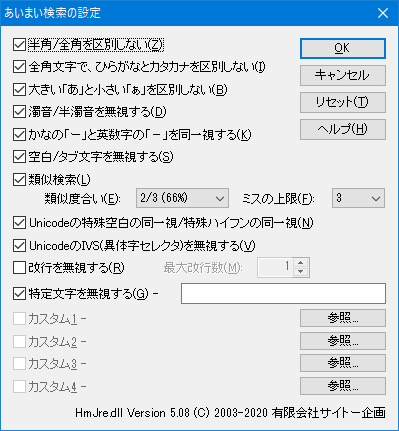

正規表現DLLに、HMJRE.DLL を指定していると、「あいまい検索」が可能になります。
あいまい検索を有効にすると、
という検索が可能になります。
詳細については、HMJRE.DLLのヘルプ- あいまい検索の設定ダイアログボックス を参照してください。
以下の機能があります。

1〜4までは、文字種に関する設定になります。全部ONにすると 以下のようになります。
ひらがなの「あ」を検索しても、カタカナや半角文字にもマッチする。
検索文字 ：あ
マッチする文字：あぁアァアァひらがなの「は」を検索しても、カタカナ、半角文字、濁音、半濁音の有無を無視してマッチする。
検索文字 ：は
マッチする文字：はハばバぱパハパバ5、8は、同一視する文字の指定です。
7の「類似検索」とは、検索文字列と完全には一致してない、「似ている」文字列を探す機能です。
「類似度合い」と「ミスの上限」を設定します。
詳細については、 HMJRE.DLLのヘルプ-「類似検索の詳細」 を参照してください。
6、9、10、11は無視する文字の設定です。 文字間の空白、タブ等を無視してマッチさせます。 特定の文字を無視する事も可能です。
カスタム1〜4で、同一視する文字列の指定も可能です。 別途ファイルを作成し、同じ行内で、タブまたは空白で区切られた文字列を同一視します。
ファイルの例
秀丸 ひでまる ｈｉｄｅｍａｒｕ上記内容だと、「秀丸」、「ひでまる」、「ｈｉｄｅｍａｒｕ」という文字列 を同一視します。
さらに
というチェック状態だと、 「hidemaru」、「ヒデマル」、「ヒデマル」、「ヒテマル」、「ヒテマル」、「ひてまる」 「ぴでまる」、「ぴてまる」、「びでまる」、「ピデマル」、「ピテマル」、「ビデマル」、 「ピデまる」、「ぴテマる」 等も同一視することになります。
実際に同一視指定ファイルを作成・有効にし、「秀丸」を検索した結果画面です。